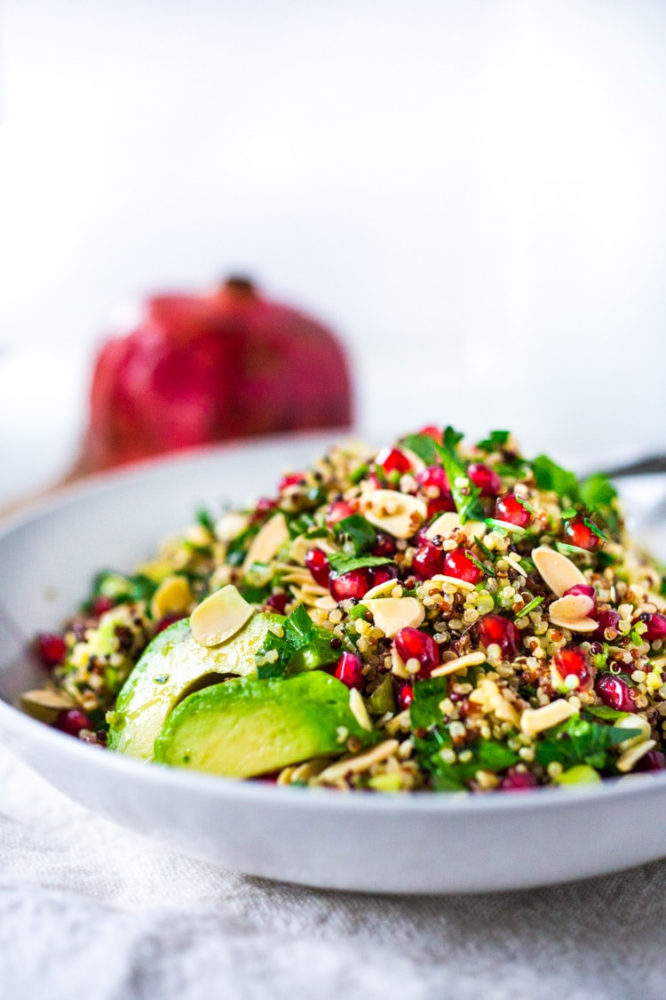

Soups and Salads
Quinoa veg salad
A high protein vegetarian salad. It can be served warm or cold. Ingredients:
- Quinoa
- Spinach
- Tomatoes
- Feta cheese
- Walnuts
- Sunflower seeds
- Olive oil
- Lemon juice
- Salt
- Pepper
Steps:
- Cook 1 cup quinoa with 2 cups of water
- Toss quinoa with all the vegetables and feta in a bowl
- Drizzle some olive oil, 1 tsp of lemon juice, salt and pepper
- Complete the salad dressing with walnuts and sunflower seeds